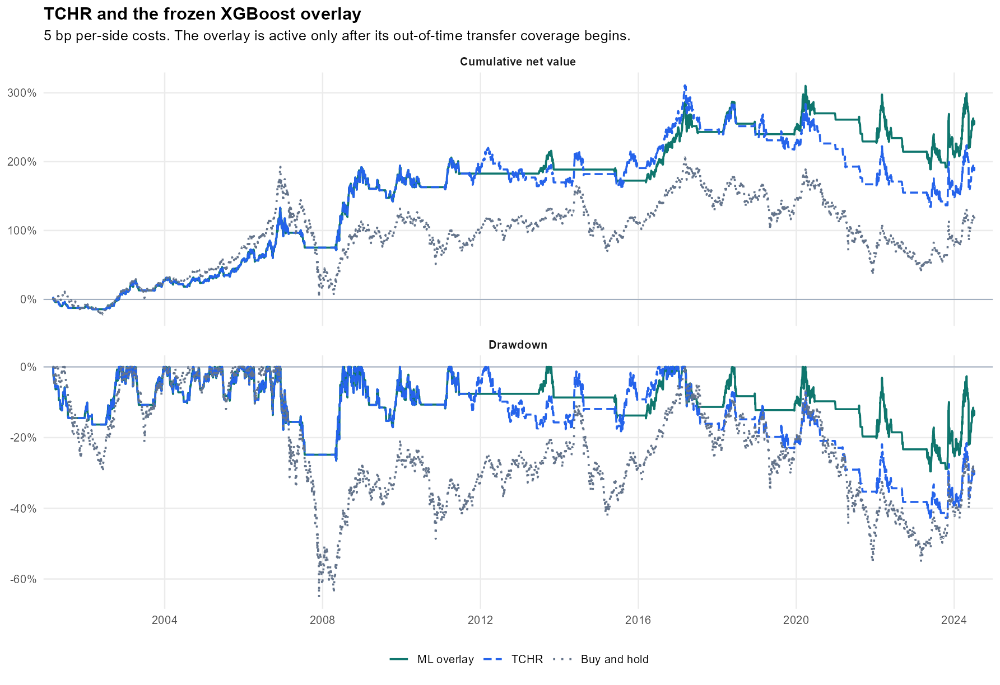
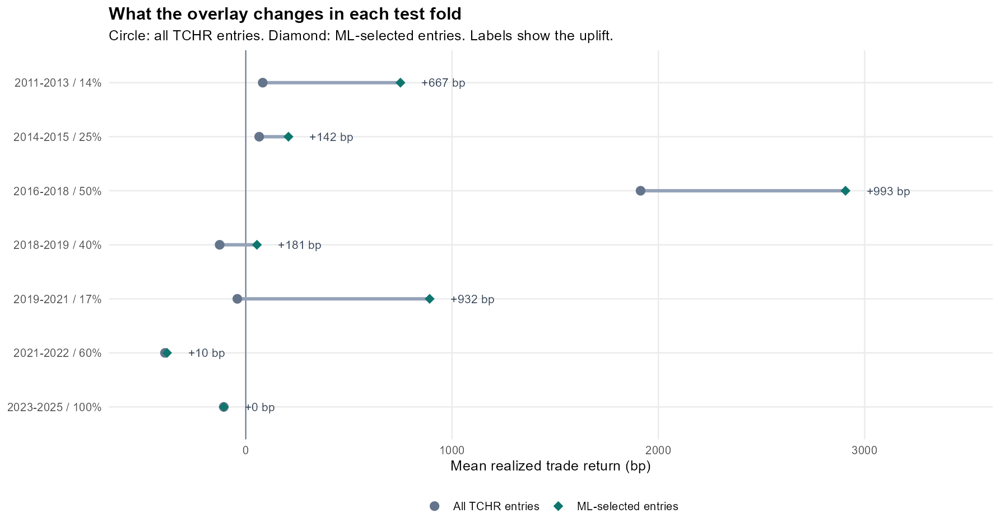
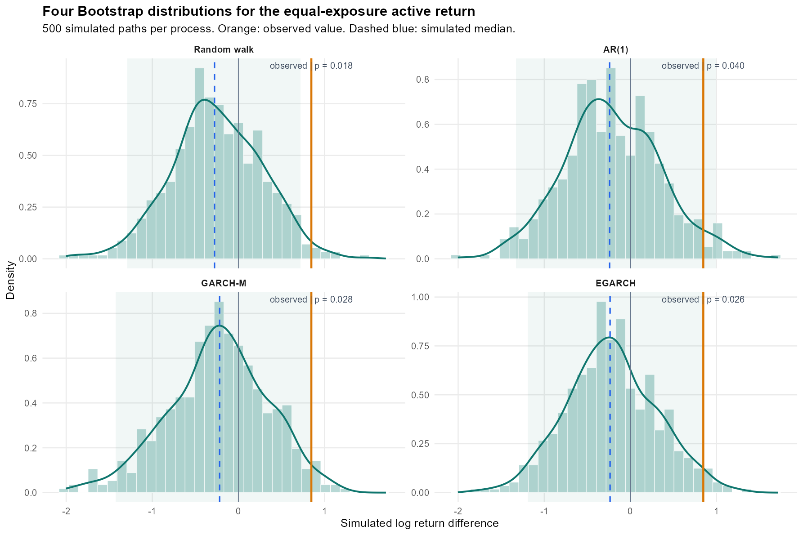
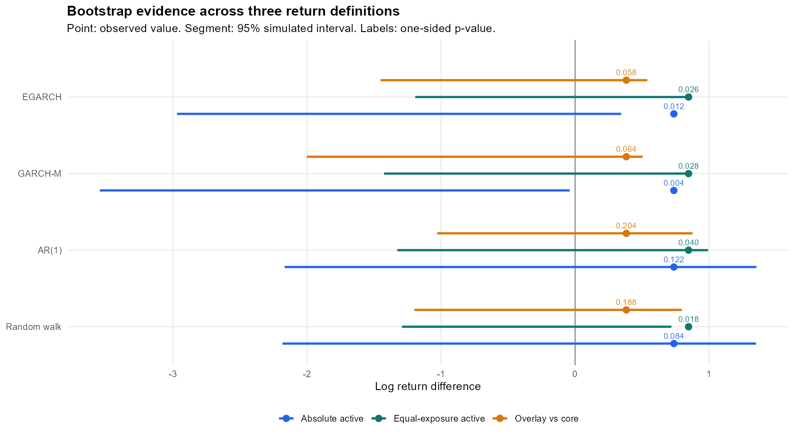

TCHR · Frozen XGBoost Overlay
Local preview of the integrated walk-forward and four-process Bootstrap validation.
Trade uplift
417.94 bp
mean across 7 folds
Bootstrap matched p
0.018–0.040
four processes
Overlay compound
34.82%
covered interval
Max drawdown
-29.57%
covered interval
Equity and drawdown

Time-fold trade uplift

Four Bootstrap distributions

Bootstrap metric comparison
